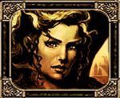

Liira
Age : 25
Sexe : Femme
Race : Humain
Faction : Alliance
Formation : Mage
Description : Les mèches folles échappées de son chignon complexe lui fouettaient le visage au rythme des bourrasques. Son regard ambre chaud scrutait lhorizon. Elle connaissait la route maritime par cur, chacun des récifs, et chacun des bancs de sable entre Menethil et Booty Bay. Bientôt elle verrait la côte grise du port ouest des Royaumes de lEst. Les éclats deau contre la coque ne latteignaient pas, chaque goutte gelait avant de la toucher et tombaient avec un petit son cristallin sur le bois du ponton avant de fondre rapidement
Elle plissa le regard
Oui ça y est elle distinguait les tourelles du port de Menethil. Elle tourna les talons et rentra dans la cabine du Capitaine qui était à la barre ; et non sans lui adresser un regard ambiguë.
Elle jeta sa capeline sur un fauteuil et se mettant devant le miroir elle sappliqua a refaire son chignon, lissant les mèches de jais. La jeune humaine baissa lentement les bras et contempla son reflet dans le miroir cadré dor. On eut dit le portrait qui se trouvait dans le salon rouge
Qui a brûlé avec tout le reste. Son regard glissa vers sa poitrine, où, au rythme régulier de sa respiration, se soulevait une bague mise en pendentif.
Un sourire en coin égaya son visage impassible. Sa dernière trouvaille à Stranglethorn, une bague de la famille, sa bague. Cétait une chevalière dor portant le blason de la famille, deux serpents noirs entremêlés danneaux sur un fond or. A lintérieur de lanneau était simplement gravés : « A Liira de Kormalys, ma fille». Si avec ça on lui refusait encore
Son sourire se figea. La fortune et le commerce des « feu » Kormalys profitent encore trop aux caisses du Roi pour quil le laisse filer si facilement. Tant quun héritier naura pas fait preuve de sa lignée, tous ses biens resteront « propriété de Stormwind »
Les Kormalys, dont larbre généalogique avait été en partie brûlé dans ce satané incendie, étaient depuis plusieurs générations implantés sur la côte sud de Stranglethorn. Noblesse marchande, ils prospéraient par le commerce dépices, de soie et autres denrées exotiques exportées vers la capitale
Une position enviable
Partie en fumée
et dont les cendres sont encore exploitées
Liira resongeait au temps béni davant cette invasion, quand toute jeune encore elle apprenait les arcanes
De constitution trop légère, son choix était alors limité aux arts profanes ou divins. Nayant, déjà à lépoque, cure des prechi-precha de la Lumière et de sermons assommants, elle sorienta vers la manipulation des énergies. Elle y pris très vite goût, exaltée par les moult stratégies possibles et le fait que si fragile elle pouvait pourtant être une menace certaine. Lair de rien
Lensemble de sa famille périt avec leurs intérêts lors dun des nombreux combats de la dernière guerre. Père et frères étaient au front et sa mère fut tuée pendant lincendie du manoir pour sauver Liira
Les incapables de prêtres du front navaient pas pu sauver son père et ses frères à temps et les renforts que Stormwind avait promis pour le sud pour défendre la baie ne sont jamais arrivés
La Pointe avait été ravagée et cest uniquement grâce au sacrifice de sa mère que la jeune femme avait pu fuir et sétait retrouvé sur le Phénix, un bateau pour Menethil
Le même que celui sur lequel elle se trouvait a ce même moment.
Ses réminiscences furent interrompues par le Capitaine qui, entré discrètement, enlaça par derrière la taille fine de Liira.
« - Nous sommes a quai
Restes tu un peu ? Jusqu'à mon départ pour Booty ? »
Elle se dégagea doucement mais résolument. Elle enveloppa ses épaules de sa capeline noire et répondit impassible :
« - Non. Jai à faire. Urgemment. »
Le Capitaine semblait déçu mais résigné, elle séchappait encore
Liira tourna les talons et grimpa sur le ponton.
Dun pas décidé, elle se dirigea vers le Maître des Griffons qui lui ferai navette jusqu'à la capitale
Lhéritière soupira, lasse, en repensant a la mine déconfite du Capitaine
encore un amoureux transi sans aucun caractère
navrant
enfin tant quil est utile
Plus d'infos sur Liira >>>